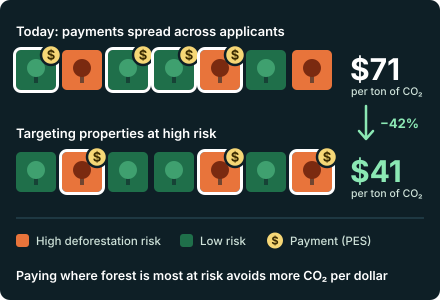

Additionality and Targeting in Payment for Ecosystem Services: Property-Level Evidence from Costa Rica
With J. M. Murguia, L. Corral, and G. Navarrete.
Journal of Environmental Economics and Management, conditionally accepted.
The program cut the deforestation rate among participants by 87%. Targeting high-risk properties could lower the cost of avoided CO₂ from $71 to $41 per ton.
Abstract (working paper version)
Our study evaluates the effect on deforestation and land cover of Costa Rica’s payment-for-ecosystem-services (PES) program, one of the oldest country-wide PES programs in the world. Using property level data from over 2,600 landowners who applied to participate in the program between 2016 and 2019, we employ an event study design using modern methods that account for rollout under treatment heterogeneity and find a statistically significant decrease in the deforestation rate. The estimated effect represents an 87% decrease with respect to the pre-2016 average deforestation rate and is equivalent to 0.09 hectares of avoided deforestation per property (a small total effect given the low baseline deforestation). We find no significant effect on forest cover, but we find suggestive evidence that there is a shift from annual to perennial crops. Given that the lack of additionality is one of the main critiques of PES programs, we explore whether the program could increase its additionality by targeting properties with higher ex-ante deforestation risk. For this, we train a machine learning model to predict which properties have a higher risk of deforestation and find that the program is currently not enrolling disproportionately more high-risk properties. Limiting our focus to these properties, we find that the reduction in the deforestation rate is 27-73% larger than what we find for the whole sample of participants. Risk-based targeting could reduce the cost of avoided CO₂ emissions by 42%, from $71 for the current program to $41 per ton, well under current estimates of the social cost of carbon.